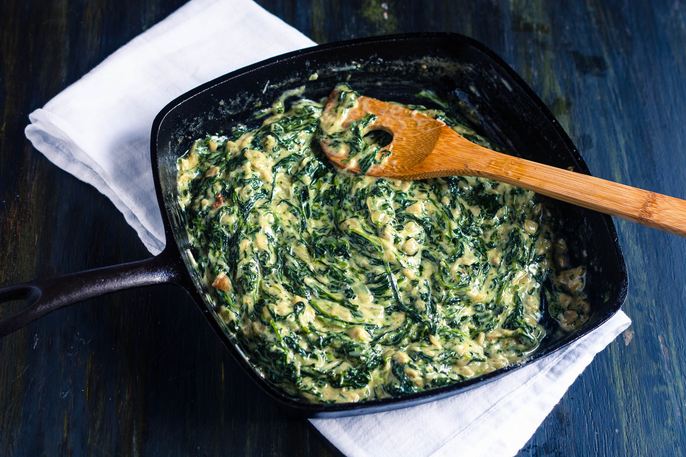

- Fresh spinach - 1 lb, washed and trimmed
- Butter - 2 tbsp
- Garlic - 2 cloves, minced
- All-purpose flour - 2 tbsp
- Heavy cream - 1 cup
- Milk - 1/2 cup
- Nutmeg - 1/4 tsp, freshly grated
- Salt - 1/2 tsp, or to taste
- Black pepper - 1/4 tsp, freshly ground
- Grated Parmesan cheese - 1/4 cup
|
- Blanch the fresh spinach in boiling water for about 1-2 minutes until wilted. Drain and squeeze out excess water. Chop spinach finely.
- In a large skillet, melt butter over medium heat. Add minced garlic and sauté for about 30 seconds until fragrant.
- Sprinkle flour over the butter and garlic mixture. Cook, stirring constantly, for 1-2 minutes to make a roux.
- Gradually whisk in heavy cream and milk until smooth and thickened.
- Add grated nutmeg, salt, and black pepper. Stir in chopped spinach and cook for 2-3 minutes until heated through.
- Remove from heat and stir in grated Parmesan cheese until melted and incorporated.
- Adjust seasoning if needed. Serve hot as a side dish.
|

|